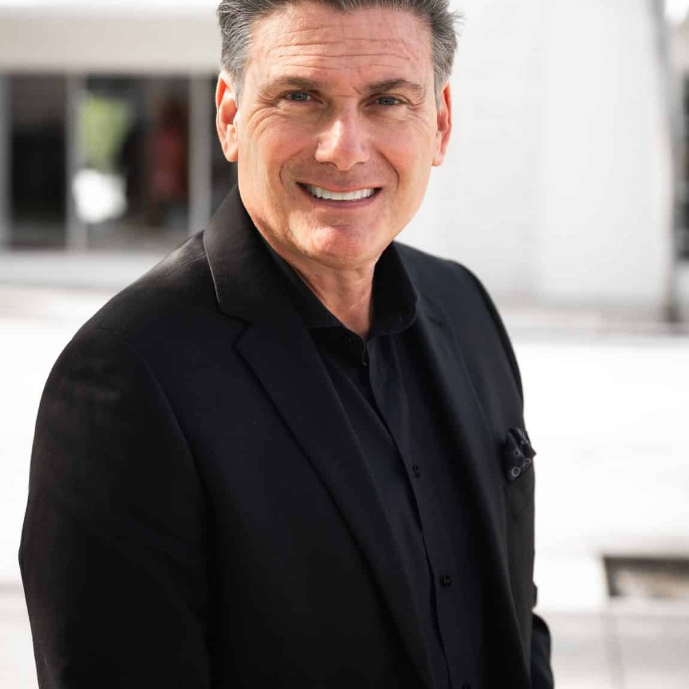

Luxury Dental Retreats deliver perspective.
Perspective rarely comes from another lecture. It comes from the conversations that happen after the formal sessions end. At dinner. During shared experiences. In smaller settings where dentists finally have enough separation from daily operations to think clearly again.
Small group. Personally curated by Dr. Rob Ritter. Every application reviewed personally.
I’d encourage you to watch this short introduction first.
In just two minutes, I’ll explain why I created Luxury Dental Retreats, why every retreat is intentionally small, and why the conversations outside the classroom often become the most valuable part of the entire experience.
If that philosophy resonates with you, there’s a good chance you’ll feel at home here.
Two minutes now may completely change what you’re looking for.
You came home with a notebook, a few business cards, and the same challenges you left with.
Not because the speakers weren’t good.
Because the structure itself rarely creates the conditions for real conversation.
Meanwhile the discussions that actually change people happen afterward. At dinner. Late at night. During shared experiences with people who understand the pressure you’re under because they’re under it too.
That’s the part most conferences were never designed around.
Luxury Dental Retreats were.

The faculty matters.
The destination matters.
But neither is the product.
The conversations are.
The relationships are.
The perspective is.
The real value comes from five days together in an environment designed to slow people down enough to think differently, relate differently, and speak more honestly than they usually do at home.
The destination creates the conditions.
The people create the transformation.
I’ve been in dentistry for more than 27 years.
I’ve built practices. I’ve led teams. I’ve experienced meaningful success. And I’ve also lived through some difficult chapters that changed how I think about business, leadership, and life.
The moments that changed my life most were never the ones that happened on conference stages.
They happened afterward. At dinner. Late at night. In smaller groups with people who understood what I was going through because they were going through it too.
The environment changes people.
The right environment changes the quality of time together. It changes perspective. It changes openness. It changes relationships. And eventually it changes decisions.
That realization became Luxury Dental Retreats. Not as a business idea. As something I personally wished existed years earlier in my own life.
Most dentists don’t need more information.
They need the time, the environment, and the conversations to think differently.
Every element of this retreat is intentional. The mornings. The evenings. The experiences in between. Nothing is filler.
These are not lectures. They are faculty-led discussions with dentists who have built, scaled, and navigated the same challenges you face.
You’ll get practical frameworks, real-world insights, and honest answers to the questions that matter most.
Leave each morning with perspective.
Return with momentum.
The best ideas rarely come alone. That’s why we create space for shared meals, unforgettable moments, and conversations that go deeper.
From long dinners and coastal sunsets to private yacht outings and exploring the charming streets of Oia, these moments spark connection, inspiration, and perspective.
Step away from the day-to-day.
Invest in what matters most.
These aren’t speakers delivering presentations before disappearing into the crowd. They’re accomplished dentists, entrepreneurs, and leaders who’ll spend five days learning, dining, exploring, and having honest conversations alongside a small group of colleagues.
Founder • Practice Growth • Aesthetic Prep Guidelines • Fee Configurations
Dr. Rob Ritter has spent more than 27 years in dentistry as a practice owner, educator, clinician, and consultant. He has presented nationally for 23 years and is talented at breaking down complex aesthetic preps.
In Santorini, Dr. Ritter leads the conversations that rarely happen at traditional conferences. Practice growth. High-ticket veneers prep design guidelines. Building a business that creates freedom instead of consuming it.
The process starts with a private conversation.
Not a sales presentation. Just an honest discussion about whether this retreat feels aligned with where you are personally and professionally right now.
I read every application personally and respond honestly. If it feels like the right fit, we’ll talk about next steps together. If it doesn’t, I’ll tell you that too.
Request a Private ConversationSmall group. Personally curated by Dr. Rob Ritter. Every application reviewed by Dr. Ritter.
October 27 - November 1, 2026 | Santorini, Greece | 18 Accredited CE Hours